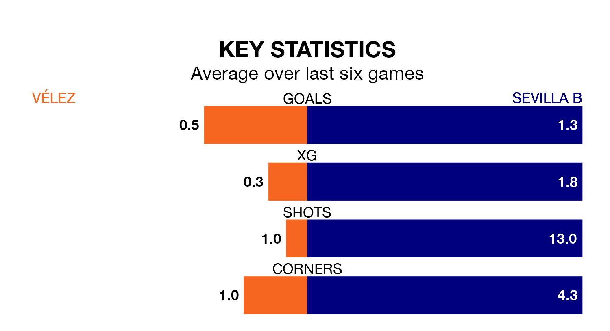

Sevilla B travel to the Estadio Vivar Téllez for Sunday's early match against Vélez looking to bounce back from defeat last time out in the Segunda División RFEF Group 4.
Sevilla B, who sit top of the league after 31 games, fell to a 2-0 away defeat to Marbella on April 14.
They face a Vélez side who also lost their last match, a 1-0 defeat to CD San Roque de Lepe, and who sit 16th in the table.
With 49 goals in 31 games so far this season, Sevilla B are the league's highest scorers with 1.6 goals per game. And they are conceding fewer than average, letting in 18 goals at a rate of 0.6 per game.
Vélez, meanwhile, are below average scorers, with 0.9 goals per game, compared to a league average of 1.0. They have conceded 1.5 goals per game.
The hosts are in terrible form in the Segunda División RFEF Group 4, with no wins and a draw from their last six games.
With four wins and a draw over that period, the away side's form is much better – they have taken 13 points from 18, compared to Vélez's one.
In the last three years, Vélez and Sevilla B have played each other on three occasions. They won one each, and they drew once.
Their last meeting was on December 10, when they played out a 1-1 draw.
Updated: 15:40 (UTC), 18/04/24